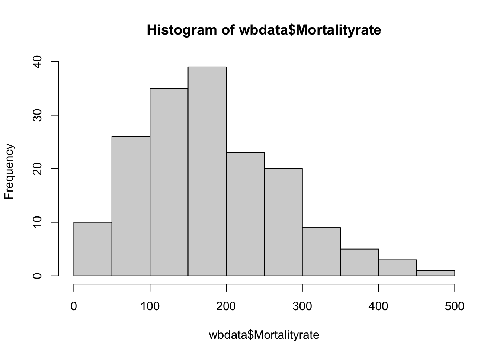
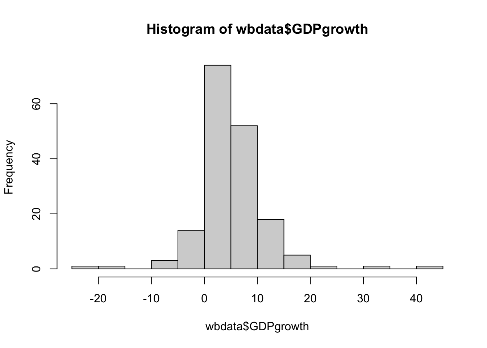
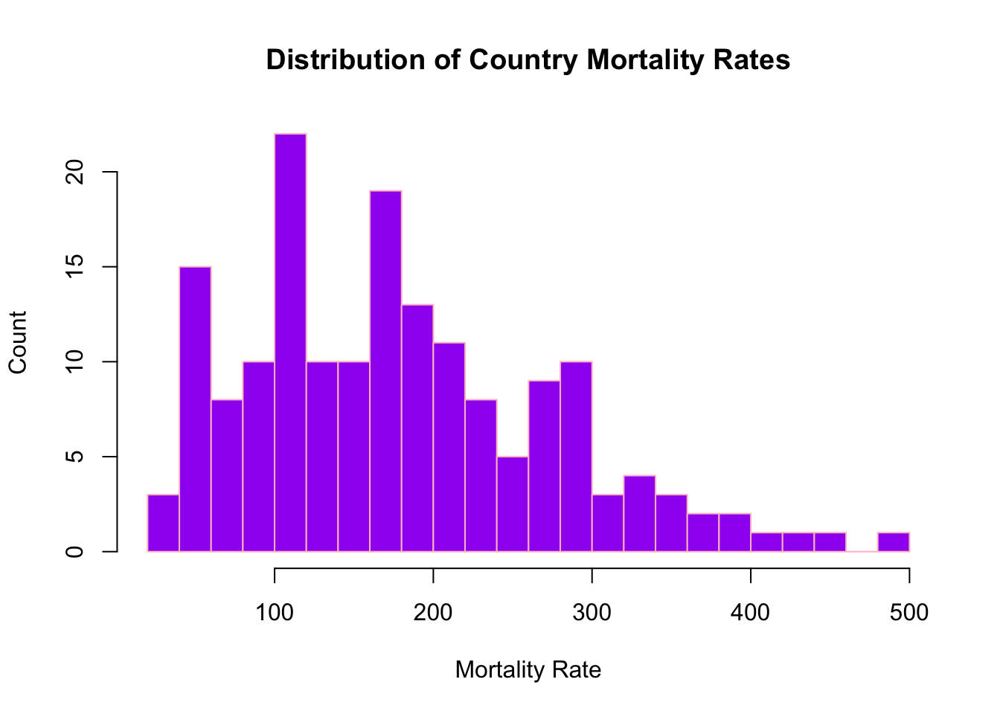
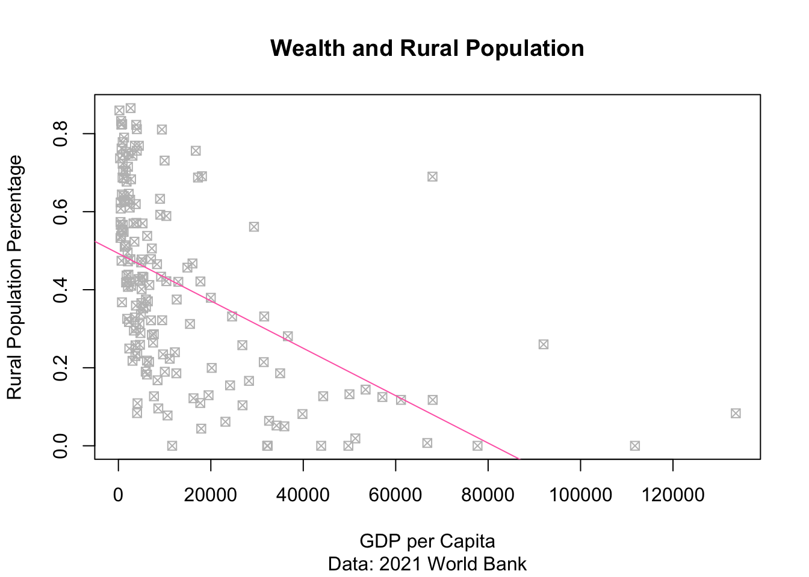
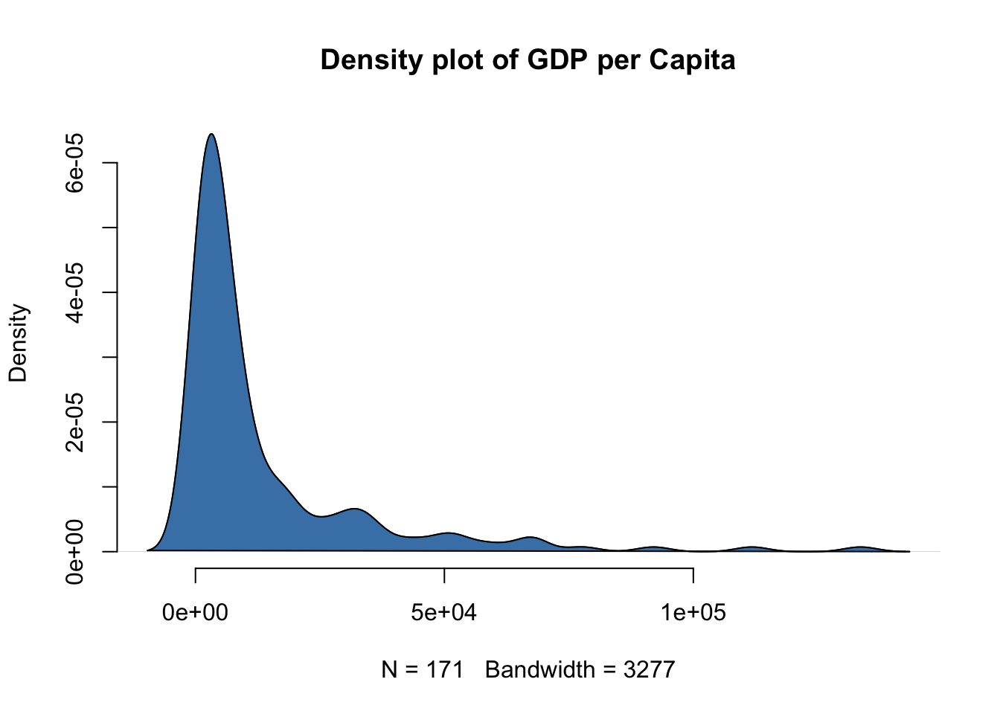
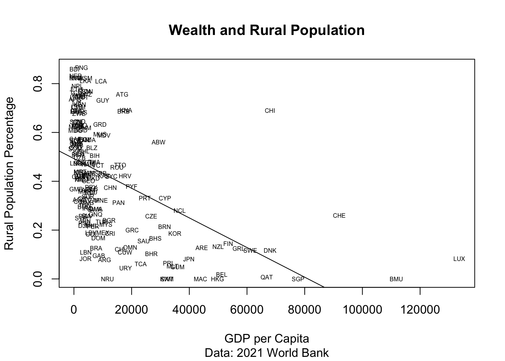
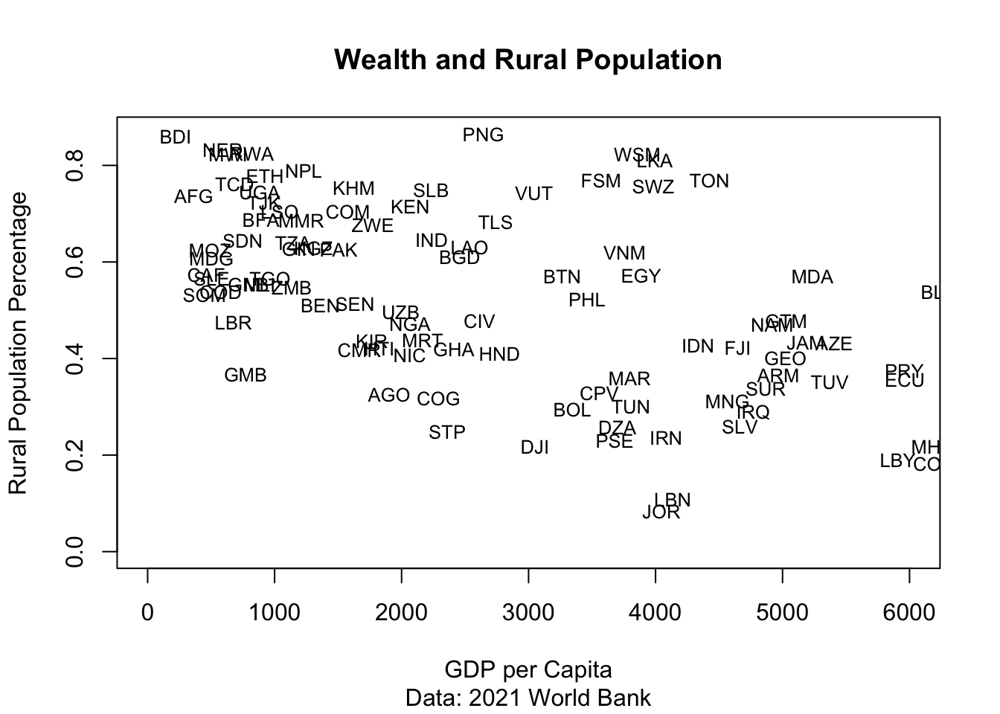

2+2[1] 475*20[1] 1500141251234/24[1] 58854684^2[1] 16Colin Kuehl
July 6, 2026
R is a computing language for performing a wide variety of statistical analysis. At its most most basic it works like a calculator.
To execute a command you can press the green button or put the cursor on the line of the command and press control+enter(command+enter on mac). This “runs” the code.
text in between the ```indicates R code. All others is just text.
The first step is loading data. If the data are in your working directory(aka the folder on your computer where the .rproj file is located) the command below should work. For this section we’re using wbdata.RData
If it isn’t, you must specify the file path. You can ignore this for now, but notice how I have to give the exact path to the file.
We will talk later about loading in all sorts of different file types.
This data comes from the World Bank. It shows country level statistics for the year 2021. You’ll know its loaded when it shows up in the upper right corner of R studio(in the “Environment”).
We can then look at the raw data. First we give a command and then in parenthesis what dataset that we’ve loaded is the target of the command
CountryName CCode GDPgrowth Population Ruralpop Mortalityrate
1 Afghanistan AFG -20.70 40099462 29547690 278.200
12 Algeria DZA 3.40 44177969 11370967 79.890
23 Albania ALB 8.91 2811666 1041188 92.125
56 Angola AGO 1.20 34503774 11227528 279.225
67 Antigua and Barbuda ATG 6.55 93219 70492 78.645
78 Argentina ARG 10.40 45808747 3559798 119.055
GDPcap
1 363.67
12 3700.31
23 6377.20
56 1903.72
67 16740.35
78 10636.12 CountryName CCode GDPgrowth Population Ruralpop Mortalityrate
2289 Uzbekistan UZB 7.40 34915100 17308463 162.255
2300 Vanuatu VUT 0.65 319137 237230 158.280
2322 Vietnam VNM 2.56 97468029 60379495 130.775
2344 West Bank and Gaza PSE 7.01 4922749 1132085 115.070
2366 Zambia ZMB 4.60 19473125 10672830 309.430
2377 Zimbabwe ZWE 8.47 15993524 10827136 391.300
GDPcap
2289 1993.42
2300 3044.57
2322 3756.49
2344 3678.64
2366 1137.34
2377 1773.92A # indicates notes. R will not run what is after as code.ie it is a comment
R is persnickety. Make sure everything is in order, only capitals are capitalized etc, and that you close quotations and parenthesis.
View(wbdata) shows data in an external window(or clicking on the table thing in the environment). Useful for seeing data as if in excelt, but does not work when knitting so we’ll keep it outside the ```
Variables and size of dataset
[1] "CountryName" "CCode" "GDPgrowth" "Population"
[5] "Ruralpop" "Mortalityrate" "GDPcap" [1] 7[1] 171[1] 171 7Looking at raw data doesn’t really tell us much. So we might want to look at summary statistics of a specific variable. Again, we type a command followed by the object we’re looking at in parenthesis.
[1] 13573.23[1] 5183.58[1] "numeric"[1] 427489871 Min. 1st Qu. Median Mean 3rd Qu. Max.
221.2 2117.8 5183.6 13573.2 15761.9 133590.1 [1] 5.222047[1] 6703799[1] 39174484[1] 4.72[1] 179.0779[1] 168.435To use a variable we always use dataset$variablename - repeat after me “dataset-dollarsign-variable name, dataset-dollarsign-variable name, dataset-dollarsign-variable name”
Sometimes you just need a picture. A histogram shows the distribution of a single variable.



A scatterplot can show the relationship between two variables - you always want your independent variable on the X axis
Thats not very helpful.
We want a percentage of the population that is rural, not a total number. We can create it in R using simple division. Note here the <- is assigning a new variable called GDPcap. Notice dataset$variablename
New scatter plots with labels and a trendline

Check-in Questions: What does the relationship look like between GDP per capita and mortality? Use code above to create a visualization. Can you change colors and label the axes? What other interesting things can you show?
When done with coding we need to “knit” our document to create an html file. If there are any errors you won’t be able to knit. If you get an error R is usually helpful in finding the general area of the issue, but not what the problem is.For problem sets, you will need to submit the knitted html file and the .rmd file. You may be prompted to install additional files when knitting the first time. Say yes to all
More fun:
A density plot

plot(wbdata$GDPcap, wbdata$Ruralpopperc, xlab = "GDP per Capita", ylab="Rural Population Percentage", main="Wealth and Rural Population", sub="Data: 2021 World Bank", type="n")
text(wbdata$GDPcap, wbdata$Ruralpopperc, labels=wbdata$CCode, cex=.5)#with labels
abline(lm(wbdata$Ruralpopperc ~ wbdata$GDPcap, col="skyblue"))Warning: In lm.fit(x, y, offset = offset, singular.ok = singular.ok, ...) :
extra argument 'col' will be disregarded

Check in question answer: